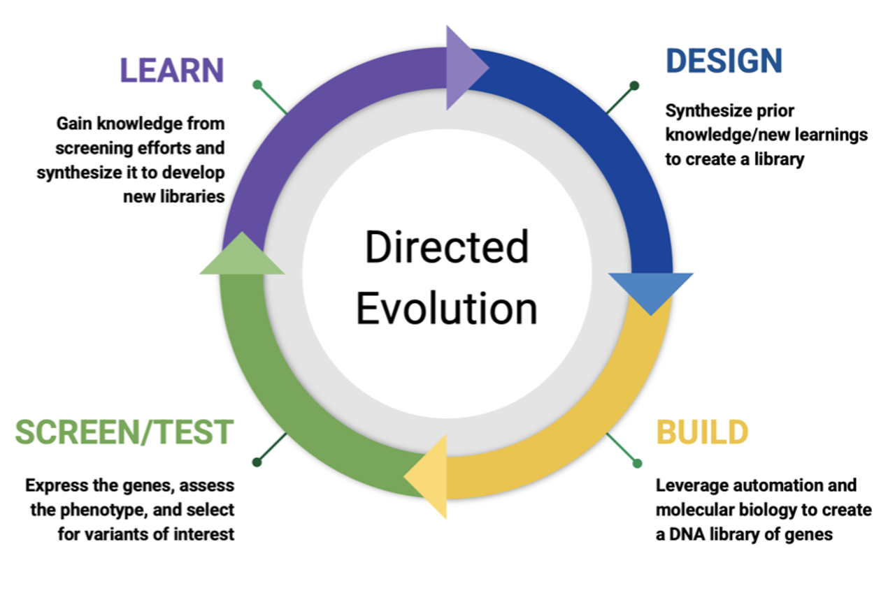

An end-to-end campaign for de novo PD-L1 mini-binder design — from target structure to ranked candidate shortlist.
This is a working protein-engineering campaign, documented as both a public portfolio and an accompanying code guide. It covers every stage of the computational design phase: backbone generation, sequence design, fold validation, interface fingerprinting, molecular dynamics, independent complex prediction, and scoring — with the decisions and tradeoffs at each stage made explicit.
Protein engineering is the deliberate modification or creation of proteins to achieve a useful function. A campaign may begin with an existing natural protein that needs to be improved, a known scaffold that can be retargeted, or — as in this volume — a desired function with no starting binder at all.
The goal is rarely to optimize a single property. A successful molecule must usually balance activity or binding with specificity, stability, expression, solubility, and manufacturability. Protein engineering is therefore a structured search through a large design space for molecules that satisfy several competing requirements at once.
A campaign coordinates repeated rounds of design, construction, testing, and analysis to develop a molecule against a defined performance specification. Unlike a single experiment, a campaign has explicit budgets, timelines, decision gates, and stopping criteria. The organizing principle is the Design-Build-Test-Learn (DBTL) cycle:
Propose candidate molecules using computational methods. This volume covers the design phase in depth.
Synthesize DNA, express protein, purify. Many designs fail here. The build phase is a filter, not just manufacturing.
Binding assays, stability assays, functional assays. Each answers a specific question with specific controls.
Analyze results, feed structured outcomes into the next round. The phase most campaigns do poorly.

Figure 1. The DBTL cycle. Each round passes through all four phases. The Learn phase feeds structured outcomes into the next Design round. This volume covers the Design phase; the Conclusion module connects to Build, Test, and Learn.
In an academic study, a successful protein design may be treated as the endpoint. In a campaign, the result of Round 1 is the input to Round 2. Designs that fail can be as informative as those that succeed, but only when sequences, design conditions, assay results, and failure modes are captured systematically. Structured failure analysis is part of the campaign, not an afterthought.
The campaign guide provides a complete, end-to-end codebase for computational mini-binder design: cleaned and annotated Colab notebooks, helper scripts, example inputs and outputs, troubleshooting notes, and a consistent data structure connecting each stage of the campaign.
Scientists who apply existing protein-design models to generate molecules and translate their outputs into experimental decisions. The guide teaches campaign execution and scientific judgment, not neural-network architecture or model training. It is particularly useful for preparing portfolio projects, interview presentations, or transitioning into computational design roles from a wet-lab background.
The tools in this workflow are publicly available. The guide saves you the integration work and gives you a tested, consistent pipeline from day one — so you spend your time on the science, not on debugging file paths and data handoffs.
Before diving into the pipeline, these pages cover the campaign context: how targets are selected, how screening funnels work, what tools are used and why, and what the experimental path looks like after computational design.